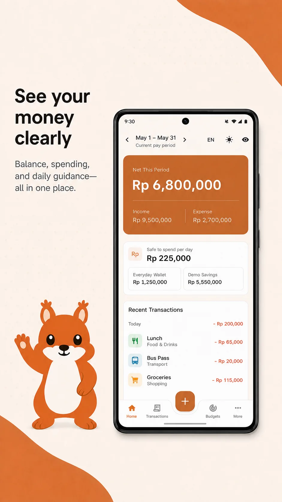

Rasio tabungan
Membandingkan pemasukan yang tercatat dengan pengeluaran pada periode gajian yang sama. Transaksi yang belum dicatat tidak dapat diperhitungkan.
Android · Gratis sepenuhnya · Segera hadir
Squirio adalah aplikasi pencatatan keuangan gratis tanpa akun yang perlu dibuat, tanpa cloud untuk sinkronisasi, dan tanpa perusahaan yang berdiri di antara Anda dan angka-angka Anda sendiri. Semua fitur tersedia tanpa biaya, langganan, pembelian dalam aplikasi, iklan, atau fitur premium berbayar. Semuanya tersimpan dalam satu berkas di perangkat Anda — dan anggarannya mengikuti tanggal gajian Anda, bukan tanggal 1.
Kenalan dengan Squi
Squi adalah tupai yang tinggal di dalam Squirio, dan muncul tepat di dua tempat: ketika sebuah layar belum berisi apa pun, dan ketika Anda mencapai sesuatu yang layak dirayakan.
Squi tidak pernah mengomentari saldo, anggaran, atau wawasan Anda — semua itu tetap berupa angka apa adanya. Kehangatannya disimpan untuk momen yang memang tidak ada apa pun untuk dibaca.
Perbedaan yang langsung terasa
Hampir semua aplikasi keuangan memotong hidup Anda menjadi bulan kalender. Jika Anda gajian tanggal 25, pemisahan itu keliru dengan cara yang diam-diam merusak angkanya — gaji Anda masuk di satu bulan sementara sewa, belanja dan transportasi yang dibiayainya jatuh di bulan berikutnya.
Gaji sudah berumur sepekan ketika jendelanya dibuka — sehingga Agustus menampilkan sebulan penuh pengeluaran dengan nyaris tanpa pemasukan.
Jendelanya dibuka pada hari uangnya tiba dan ditutup sehari sebelum gaji berikutnya. Satu gaji masuk, pengeluaran satu gaji keluar.
Atur tanggal gajian Anda sekali, saat penyiapan. Setelah itu seluruh aplikasi berjalan pada siklus tersebut — dasbor, setiap anggaran, analitik, skor kesehatan dan rekap semuanya memakai jendela yang sama.
Privasi sejak rancangannya
Sebagian besar aplikasi keuangan meminta Anda menyerahkan riwayat pengeluaran lalu berjanji akan menjaganya. Squirio menghapus tahap ketika Anda harus memercayai siapa pun. Data Anda tidak pernah pergi ke mana-mana, karena aplikasinya tidak punya tempat untuk mengirimkannya.
Semuanya berupa satu basis data SQLite di penyimpanan privat aplikasi. Tidak ada salinan di tempat lain kecuali Anda sendiri yang membuatnya.
Satu ketukan pada ikon mata menyamarkan seluruh angka di aplikasi sekaligus — untuk saat menyerahkan ponsel kepada orang lain, atau sekadar membukanya di kereta yang penuh.
Cadangkan ke berkas zip milik Anda, atau ekspor ke CSV dan buka di aplikasi lembar kerja. Tidak ada kuncian yang perlu dilepaskan.
"Tanpa pelacakan" mudah diklaim, jadi ini versi yang bisa Anda periksa sendiri: nyalakan mode pesawat dan pakai Squirio seharian. Semuanya tetap berjalan, karena memang tidak pernah ada yang dikirim ke mana pun. Aplikasi ini dibangun tanpa bagian yang memungkinkan sebuah aplikasi berbicara dengan internet sama sekali — jadi tidak ada yang diam-diam melaporkan apa yang Anda ketuk, dan tidak ada yang menghubungi pusat ketika terjadi kesalahan. Tidak ada pula yang bisa mengambil iklan: menayangkan iklan berarti permintaan jaringan, dan itulah tepatnya kemampuan yang sengaja ditiadakan. Wawasan, peringatan pengeluaran tak biasa dan skor kesehatan adalah penjumlahan dan rata-rata yang dihitung di ponsel Anda. Satu-satunya saat data Anda berpindah adalah ketika Anda menekan bagikan pada sebuah cadangan atau ekspor — dan saat itu ia pergi tepat ke tempat yang Anda tuju.
Kecerdasan di dalam perangkat
Squirio membaca riwayat Anda sendiri dan menunjukkan apa yang berubah — tanpa satu pun darinya meninggalkan ponsel.
Metodologi yang transparan
Skor kesehatan keuangan merangkum pola dari transaksi yang Anda catat dalam periode gajian. Seluruh perhitungan berlangsung di perangkat dan ketiga sub-skor tetap ditampilkan agar angka akhirnya tidak menjadi penilaian tersembunyi.
Membandingkan pemasukan yang tercatat dengan pengeluaran pada periode gajian yang sama. Transaksi yang belum dicatat tidak dapat diperhitungkan.
Membandingkan pengeluaran dengan batas anggaran yang Anda tetapkan serta kemajuan hari dalam periode tersebut.
Melihat perubahan pemasukan yang Anda catat di antara periode gajian yang telah selesai. Pendapatan tidak tetap dapat membuat nilai ini lebih berfluktuasi.
Pratinjau produk
Pratinjau menggunakan data demonstrasi dan memperlihatkan periode gajian, saldo, pemasukan, pengeluaran, batas aman belanja, dompet, dan transaksi terbaru.

Dibuat untuk nominal sungguhan
Orang berhenti memakai pencatat keuangan karena pencatatannya merepotkan. Maka pencatatan adalah bagian yang digarap paling keras oleh Squirio.
Anggaran yang berkata jujur
Berada di 85% anggaran makan Anda mengkhawatirkan pada hari ke-3 dan sama sekali wajar pada hari ke-27. Setiap batang anggaran Squirio membawa penanda laju yang menunjukkan sudah sejauh mana periode Anda benar-benar berjalan, sehingga angkanya punya konteks.
Analitik
Rincian per kategori, arus kas dua belas bulan berjalan, tren pengeluaran dibanding rata-rata Anda sendiri, kalender intensitas harian, dan peringkat merchant yang diam-diam mengambil paling banyak.
Setiap hari dalam siklus, diarsir menurut besar pengeluarannya. Ketuk kotak mana pun untuk melihat hari itu.
Selebihnya
Gaji, sewa dan langganan tercatat sendiri sesuai jadwal. Tutup aplikasi selama sebulan dan semuanya menyusul dengan benar saat Anda membukanya.
Tetapkan target, sisihkan uang untuknya, dan lihat tanggal Anda benar-benar akan sampai berdasarkan seberapa rutin Anda menyetor selama ini.
Uang yang Anda pinjamkan dan uang yang Anda pinjam, dengan kalkulator pelunasan yang memberi tahu berapa bulan yang dibutuhkan sebuah cicilan bulanan.
Tunai, bank, kartu kredit, dompet digital, tabungan dan investasi — dengan transfer di antaranya dan kekayaan bersih yang terus berjalan. Kartu menampilkan berapa yang Anda utang.
Bawa masuk CSV dari bank atau aplikasi lain, petakan kolomnya sekali, dan lihat pratinjaunya sebelum apa pun ditulis.
Setiap siklus gajian mendapat kartu ringkasan yang bisa Anda ekspor sebagai gambar — dan ia menunggu sampai periodenya benar-benar selesai sebelum menyebutnya hasil.
Kedua bahasa diterjemahkan sepenuhnya, bukan diisi mesin. Rupiah adalah mata uang kelas satu, diformat tanpa desimal sebagaimana orang benar-benar menuliskannya.
Palet hangat yang dirancang agar terasa seperti buku catatan alih-alih terminal perdagangan — termasuk pengeluaran dalam warna dusty rose alih-alih merah tanda bahaya.
Saldo dan kemajuan target dihitung ulang dari transaksi Anda setiap saat, jadi memperbaiki satu catatan dari tiga bulan lalu ikut memperbaiki semua yang mengikutinya.
Tidak — dan itu disengaja. Koneksi bank mengharuskan Anda menyerahkan kredensial kepada agregator pihak ketiga yang kemudian menyimpan seluruh riwayat transaksi Anda. Squirio tidak punya server, jadi ia tidak akan bisa melakukannya sekalipun ingin. Anda memasukkan transaksi sendiri, atau mengimpor CSV yang sudah diberikan bank Anda.
Hanya jika Anda mau. Setiap anggaran punya sakelar "Ulangi setiap periode" — nyalakan dan batas yang sama kembali setiap siklus, memperbarui pada tanggal gajian Anda alih-alih tanggal 1, membawa sisa dana jika Anda memintanya. Biarkan mati dan anggaran itu hanya mencakup periode saat Anda membuatnya, lalu pindah ke daftar "Berakhir" alih-alih menghilang. Ini berupa sakelar dan bukan asumsi karena anggaran yang sengaja Anda pilih untuk diulang adalah anggaran yang masih bisa Anda jelaskan kepada diri sendiri enam bulan kemudian.
Inilah konsekuensi jujur dari aplikasi yang menyimpan data secara lokal: jika satu-satunya salinan ada di ponsel dan ponselnya hilang, datanya ikut hilang. Squirio memberi Anda pencadangan satu ketukan yang menghasilkan berkas zip yang bisa Anda simpan di penyimpanan awan Anda sendiri, kirim ke email Anda, atau taruh di mana pun Anda suka. Lakukan sesekali dan Anda aman — dengan cara Anda sendiri, dalam berkas yang Anda kendalikan.
Tidak otomatis. Sinkronisasi berarti server, dan server berarti riwayat pengeluaran Anda berada di komputer orang lain — yang justru merupakan hal yang ingin dihindari aplikasi ini. Anda bisa memindahkan data antar perangkat dengan berkas cadangan kapan pun Anda perlu.
Squirio akan diluncurkan khusus di Android pada Oktober 2026.
Ya. Squirio sepenuhnya gratis tanpa biaya unduh, langganan, pembelian dalam aplikasi, iklan, atau fitur premium berbayar.
Kapan saja, dengan dua cara. Cadangan penuh berupa zip yang berisi berkas basis data sesungguhnya, dan ekspor CSV memberi Anda lembar kerja biasa berisi setiap transaksi. Keduanya langsung menuju lembar berbagi Anda.
Gratis sepenuhnya dan hadir khusus di Android pada Oktober 2026.